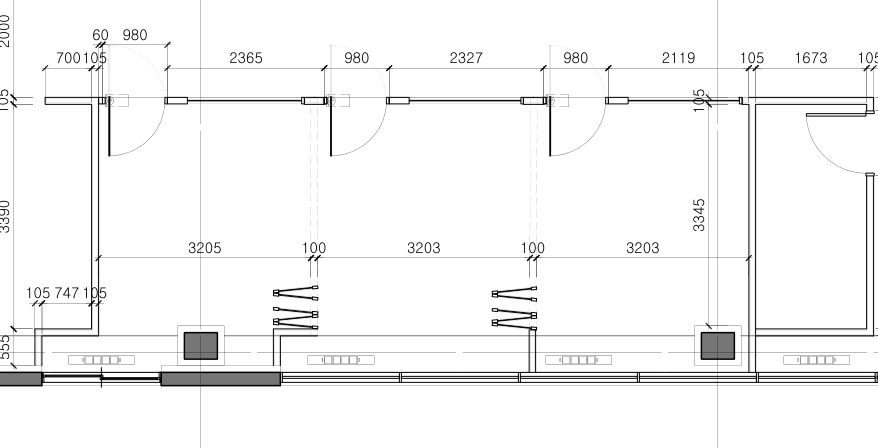

AI가 도면을 근거와 함께 읽게 만들면, 오차는 이렇게 줄어든다
실제 공공 인테리어 공사의 도면(133장 중 7장)으로 바닥재 물량을 AI에게 산출시키고, 같은 모델로 지시·도구·입력 해상도를 단계적으로 바꿔 6번 돌렸습니다. 방 19개를 PDF 속 CAD 벡터로 직접 측정해 채점했습니다.
숫자 맞히기보다, 틀린 곳을 짚을 수 있게
| 버전 | 바꾼 것 | 방 단위 오차 | ±5% 이내 | 신뢰 중↑ 면적 | 합계 오차 |
|---|
합계 오차는 도면 기준(벡터 실측 1,197.6㎡) 대비입니다. v1은 합계가 −2.6%로 가장 가까웠지만 방별 근거가 하나도 없어 어디가 맞고 틀렸는지 확인할 수 없습니다. 합계 하나만 보고 AI를 믿으면 안 되는 이유입니다.
방을 누르면 AI가 어떤 치수를 읽었는지 나옵니다
색칠한 영역은 PDF의 CAD 레이어(벽·문틀·창호)만 다시 그려 방마다 채운 실측 기준입니다. 축척은 층마다 치수 4곳으로 교차 확인했고 0.07% 안에서 맞았습니다(3층은 2층과 같은 치수 사용).

| 실 | 코드 | 실측 | v2 | v6 |
|---|
오차를 쫓다 보니 견적 실무의 숨은 규칙이 나왔다

창가 회의실·임원실 8곳이 10~19% 작게 나왔다. 실 깊이 치수선 뒤에, 창까지 555mm 띠가 따로 적혀 있었다.
AI는 실 치수선만 읽고 창 앞 FCU 박스 구간을 빠뜨렸습니다. 이 띠는 2층·3층에서 각각 약 30㎡(합 61㎡)입니다. 정책조정실·접견실은 원래 오차가 작아서 띠를 더한 뒤 오히려 4~6% 커졌습니다. 넣을지 말지는 고객사 기준에 따라 갈리는 판단이라, 규칙으로 넣되 따로 집계해 견적팀이 고를 수 있게 했습니다.
내역 수량에는 할증이 없다
바닥재 9종 합계 1,323㎡가 같은 내역서의 바닥 바탕정리 1,324㎡와 거의 같습니다. 손실 할증은 수량이 아니라 일위대가 쪽에 들어가 있는 것으로 보여서, AI에게 정미량으로 내라고 지시했습니다.
코드 번호 체계가 서로 다르다
도면 범례에는 카펫 CT-01~03뿐인데 내역에는 CT-01~05가 있습니다. 내역 CT-01(101㎡)은 도면상 CT-01인 지하 대회의실 하나(135㎡)보다 작습니다. 그래서 코드별이 아니라 자재 종류별로 대조했습니다.
같은 코드, 다른 크기
DE-01은 내역 300×300, 도면 범례 450×450. DT-01은 내역 450×450, 자재표 600×600. 면적은 같아도 단가가 달라지는 항목이라 확인 질문으로 올렸습니다.
"창고"를 "장고"로 읽었다
v2·v3에서 지하 "창고"를 "장고"로 읽었고 v4부터 사라졌습니다. 타일은 v3부터 줬기 때문에 정확한 원인은 아직 확인하지 못했습니다. 실 이름 하나 틀린 것이지만, 같은 방식으로 치수 숫자가 틀리면 수량이 바로 틀어집니다.
코드 대신 문구만 적힌 방
2층 직원휴게실은 코드 태그 없이 "DECO TILE FIN." 문구만 있습니다. v4는 이런 실 3곳(직원휴게실·대회협력실·탕비 구역)에 임의로 코드를 붙였고, v5 검토자가 규칙 위반으로 걷어냈습니다(약 48㎡). 지하 기사대기실은 문구만 있는데도 DE-01로 남아 있어 확인이 필요합니다.
단상 아래에는 카펫을 깔지 않는다
지하 대회의실의 우드플로링 단상은 내역에 단상설치 1EA(6000×1200 = 7.2㎡)로 따로 잡혀 있습니다. AI는 도면 비례로 약 9.4㎡를 카펫 면적에서 뺐고, 실측 기준과의 −8%는 대부분 이 공제입니다.
도면에 있는 것과 내역에 잡힌 것의 차이 125㎡
도면에서 코드가 붙은 면적은 1,197.6㎡, 전문 적산사의 내역은 1,323㎡입니다. AI가 아무리 정확해도 도면만으로는 이 차이를 메울 수 없습니다. 차이가 어디서 오는지 설명하는 것까지가 산출입니다.
| 자재 종류 | AI v6 | 도면 실측 | 내역서 | 도면→내역 | 추정 원인 |
|---|---|---|---|---|---|
| DE 디럭스타일 | 71.0 | 66.1 | 59 | −7.1 | 태그 해석 차이 (2층 금고는 태그 DE, 문구는 P-TILE) |
| DT 데코타일 | 721.3 | 759.6 | 863 | +103.4 | 서버실·INFO 등 코드 없는 실, 지하 미표기 구역을 내역이 포함한 것으로 추정 |
| CT 타일카펫 | 364.1 | 371.9 | 401 | +29.1 | 창측 띠·단상 처리 기준 차이로 추정 |
| 합계 (㎡) | 1,156.4 | 1,197.6 | 1,323 | +125.4 | 원인은 모두 추정. 확인 질문으로 정리해 두었습니다 |
산출근거서 엑셀(공종별집계 · 실별 산출근거 · 검토 필요 항목 · 실험 기록)은 메일에 첨부했습니다. 모든 합계는 실별 행에서 수식으로 계산됩니다.
여기서부터가 팀에서 풀고 싶은 문제
- 걸레받이는 내역 대비 −40%. AI 460m, 내역 765m. 열린 사무실 외곽, 기둥 둘레, 붙박이 가구 뒤를 어떻게 세는지 기준을 모릅니다. 견적팀에게 배워야 하는 부분입니다.
- 열린 공간의 코드 경계. 복도와 사무실이 벽 없이 이어진 곳은 실측도 기하학적 분할이라 ±10~20㎡ 오차가 있을 수 있습니다.
- 실측 기준에도 오차가 있습니다. 10㎡ 넘는 방은 ±1~2%, 작은 방은 더 큽니다. 지하 서고·법률구조재단은 앞쪽 통로가 섞여 2~4㎡ 클 수 있어서, 이 방들은 ±5% 판정 자체가 빠듯합니다.
- 실측 기준에도 오차가 있습니다. 10㎡ 넘는 방은 ±1~2%, 작은 방은 더 큽니다. 지하 서고·법률구조재단은 앞쪽 통로가 섞여 2~4㎡ 클 수 있어서, 이 방들은 ±5% 판정 자체가 빠듯합니다.
- 실측 기준에도 오차가 있습니다. 10㎡ 넘는 방은 ±1~2%, 작은 방은 더 큽니다. 지하 서고·법률구조재단은 앞쪽 통로가 섞여 2~4㎡ 클 수 있어서, 이 방들은 ±5% 판정 자체가 빠듯합니다.
- 실측 기준에도 오차가 있습니다. 10㎡ 넘는 방은 ±1~2%, 작은 방은 더 큽니다. 지하 서고·법률구조재단은 앞쪽 통로가 섞여 2~4㎡ 클 수 있어서, 이 방들은 ±5% 판정 자체가 빠듯합니다.
- 실측 기준에도 오차가 있습니다. 10㎡ 넘는 방은 ±1~2%, 작은 방은 더 큽니다. 지하 서고·법률구조재단은 앞쪽 통로가 섞여 2~4㎡ 클 수 있어서, 이 방들은 ±5% 판정 자체가 빠듯합니다.
- 표본이 작습니다. 공사 1건, 버전마다 1회 실행입니다. 같은 지시로 여러 번 돌렸을 때의 흔들림은 아직 재지 않았습니다.
- v6 규칙은 검증 세트에서 찾았습니다. 같은 세트로 평가했으니 4.3%는 낙관적인 숫자입니다. v1·v2는 도면 4장만 받았고 v3부터 치수 도면과 타일이 더해졌으니, 개선에는 입력 변화도 섞여 있습니다. v1·v2는 도면 4장만 받았고 v3부터 치수 도면과 타일이 더해졌으니, 개선에는 입력 변화도 섞여 있습니다. v1·v2는 도면 4장만 받았고 v3부터 치수 도면과 타일이 더해졌으니, 개선에는 입력 변화도 섞여 있습니다. v1·v2는 도면 4장만 받았고 v3부터 치수 도면과 타일이 더해졌으니, 개선에는 입력 변화도 섞여 있습니다. v1·v2는 도면 4장만 받았고 v3부터 치수 도면과 타일이 더해졌으니, 개선에는 입력 변화도 섞여 있습니다. 다음 공사 도면에서 다시 재야 진짜 성능입니다.
- 이미지로 읽는 것 자체가 우회로입니다. 이 PDF에는 CAD 레이어 이름(wall, door, 치수선)이 그대로 남아 있었습니다. 벡터를 먼저 읽고, 이미지는 태그·문구 판독에만 쓰는 구조가 더 맞다고 봅니다.
정답을 못 보는 작업자, 따로 채점하는 기준
견적팀에 먼저 물어볼 질문
- 창가 FCU 박스 아래까지 바닥재를 까나요, 박스 앞에서 끊나요?
- 코드 태그 없이 마감 문구만 있는 실은 어떻게 산출하시나요?
- 걸레받이는 기둥 둘레와 붙박이 가구 뒤에도 넣나요?
- 도면과 내역의 코드 번호가 다를 때 어느 쪽을 기준으로 맞추시나요?
- 견적 하나에서 가장 시간이 오래 걸리는 공종은 무엇인가요?
- AI 결과에서 단 하나만 다시 확인한다면 어디를 보시나요?
- 고객사마다 다른 견적서 양식은 몇 가지 패턴으로 묶이나요?
- 정미량과 할증을 나누는 기준이 고객사마다 다른가요?
- 기본도면과 실시도면 단계에서 물량이 보통 얼마나 달라지나요?
- "이 숫자는 믿을 수 있다"고 느끼게 하는 산출근거서의 조건은 무엇인가요?